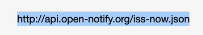

API
API or application programming interface is an interface, or a barrier that connects you to an external system. This regulates the amount of data you can take from an external server.
To interact with the external system, we first need to create an API request, in a simple API, this will respond to us by giving us some information in a JSON kind of format. We do this by using what we call an Endpoint.
Here is an example of an endpoint which is basically just a url.

It respond like this.

We can use the extension JSON viewer awesome to print this out in a nice format.

To create a request using a python syntax, first we need to import the request module which is not installed in our standard library

Then we use this to get response to the specified url

When we print these response code, the console will ourput this

200 is a response code meaning OK. Still, this is a very vague response for a response code, to detect an error using this, we could raise an exception for it by using the method .raise_for_status()

To actually get the data from the response variable, we could convert the response to a json file by using json()

TThis will print out all data inside, but to narrow down the data, we can use bracket notation to track it down.


Printing this out, we could get the data in a tuple.